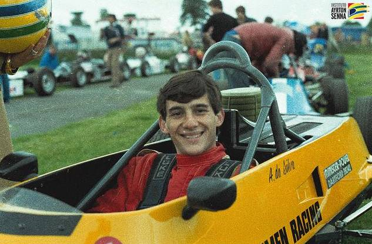
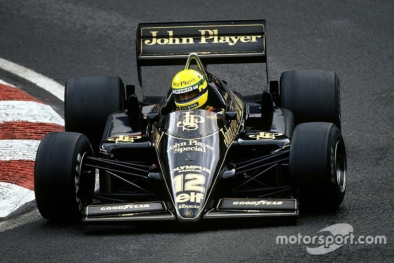
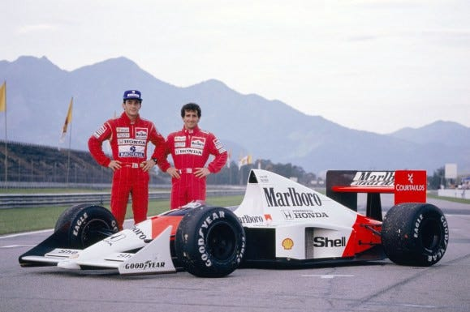
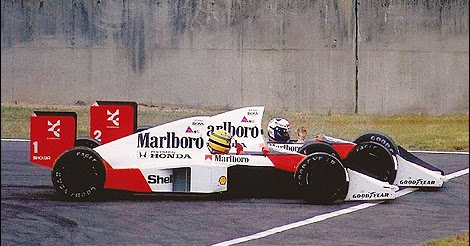
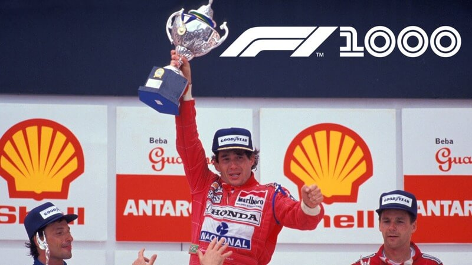
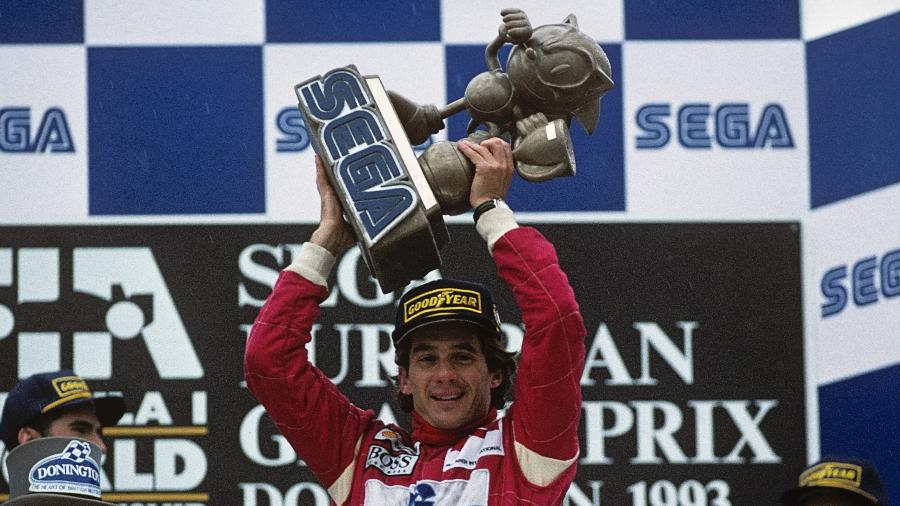
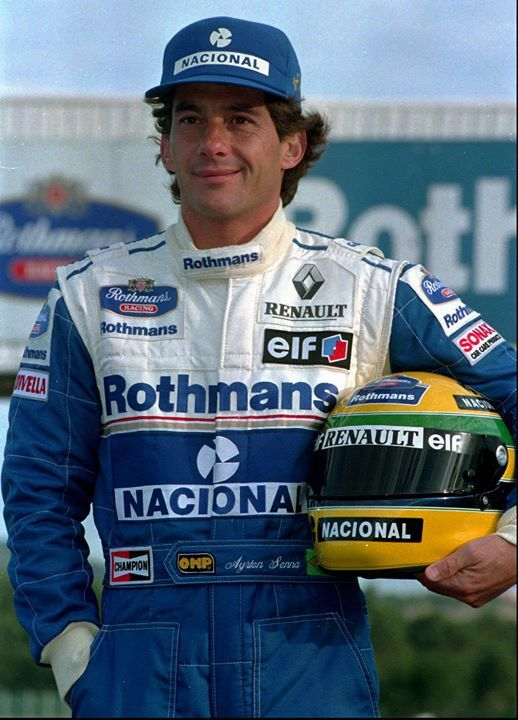
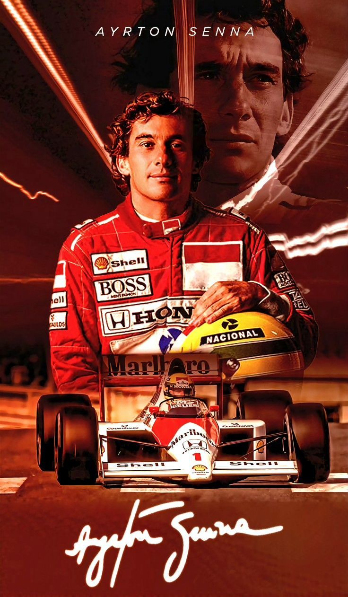
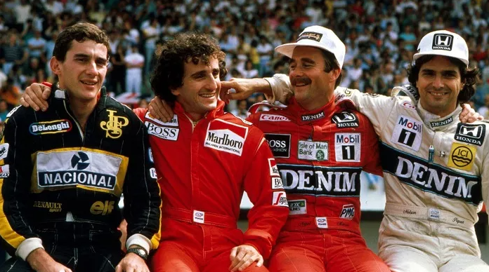

Ayrton Senna
Ayrton Senna da Silva (1960-1994) foi um piloto brasileiro de Fórmula 1, amplamente considerado um dos maiores da
história do esporte.
Tricampeão mundial (1988, 1990, 1991) pela McLaren, destacou-se pela pilotagem
agressiva e genialidade na chuva.
Faleceu tragicamente em um
acidente no GP de San Marino em 1994, tornando-se uma lenda nacional.
Falar de Ayrton Senna é falar de um nível de mística que poucos atletas na história alcançaram. Para muitos, ele
não era apenas um piloto, mas um gênio que via a pista de uma forma quase espiritual.
Trajetória:
🏎️ O Surgimento do Gênio (1960 - 1983)

Nascido em São Paulo, Ayrton começou no kart aos 4 anos em um carrinho construído pelo pai.
- Disciplina na Chuva: Um fato curioso é que, após perder uma corrida de kart na chuva por
não saber guiar no molhado, ele passou a treinar sob tempestades até se tornar o melhor do mundo nessas
condições.
- Domínio na Europa: Ele varreu as categorias de base na Inglaterra (Fórmula Ford e F3),
ganhando o apelido de "Silvestre" pela forma como caçava os adversários.
🌟 O Impacto Imediato (1984 - 1987)

Senna estreou na F1 pela pequena Toleman, e o mundo parou para prestar atenção no GP de Mônaco de 1984.
- Mônaco 1984: Sob uma tempestade, com um carro muito inferior, Senna saiu de 13º para 2º e
estava prestes a ultrapassar Alain Prost para vencer quando a corrida foi interrompida.
Ali nascia o
"Rei de
Mônaco".
- A Primeira Vitória: Já na Lotus, em 1985, ele deu um show no Estoril (Portugal),
vencendo sua primeira corrida debaixo de um dilúvio, dando volta em quase todo o grid.
🏆 A Era de Ouro na McLaren (1988 - 1993)

Em 1988, Senna se juntou à McLaren para formar a dupla mais famosa (e explosiva) da história com Alain Prost.
- O Tricampeonato: Ele foi campeão em 1988, 1990 e 1991. As batalhas com Prost em Suzuka
(Japão) em 89 e 90 são os momentos mais dramáticos e controversos da F1.

- Interlagos 1991: Talvez sua vitória mais icônica. Ele venceu o GP do Brasil com apenas a
sexta marcha funcionando nas voltas finais, terminando a corrida em um estado de exaustão física total,
gritando de dor e alegria pelo rádio.

- Donington Park 1993: Considerada por muitos a "melhor primeira volta de todos os tempos",
onde ele ultrapassou quatro carros de elite em meia volta sob chuva.

🕊️ O Legado e Imola 1994

Em 1994, Senna realizou o desejo de ir para a Williams, que era a equipe a ser batida. Porém, o carro daquele ano
era instável e difícil de guiar.
- 1º de Maio de 1994: No GP de San Marino, em Ímola, um acidente na curva Tamburello tirou a
vida de Senna aos 34 anos. O Brasil parou em um luto nacional que durou dias.
- Segurança: A morte de Senna mudou a Fórmula 1 para sempre, forçando uma revolução
nos padrões de segurança que salvou inúmeras vidas nas décadas seguintes.
Estátisticas:
| Vitórias |
Pódios |
Poles |
Corridas |
| 41 |
80 |
65 |
161 |

| Títulos |
| Temporada |
Equipe |
Vitórias |
Pódios |
Poles |
| 1988 |
McLaren |
8 |
11 |
13 |
| 1990 |
McLaren |
6 |
11 |
10 |
| 1991 |
McLaren |
7 |
12 |
8 |
-
Destaques
- Títulos: Tricampeão Mundial (1988, 1990, 1991)
- Rei de Mônaco: Recordista absoluto com 6 vitórias (5 consecutivas: 1989-1993).
- Vitórias na Chuva: Reconhecido como o "Mestre da Chuva", com destaque para a
vitória no GP de Portugal 1985 e a "Volta dos Deuses" em Donington 1993.
- Equipes: Estreou na Toleman (1984) e brilhou na McLaren (1988-1993).
-
Legado:
Senna é um ícone nacional no Brasil, e seu legado transcende o esporte, inspirando gerações
de fãs e pilotos. Ele é lembrado não apenas por suas conquistas,
mas por sua paixão, carisma e espírito
competitivo inigualável.

Voltar para a lista de pilotos